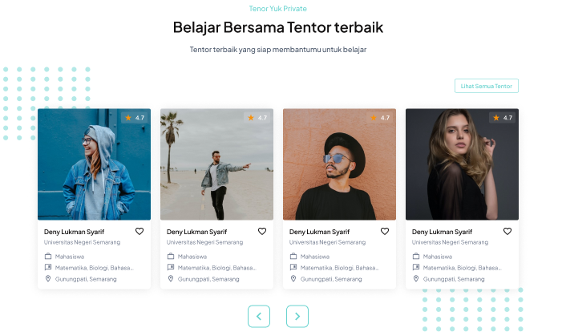

Ringkasan Proyek
Jenis Projek
Projek Tim (Freelance)
Peran Saya
UI/UX Designer
Linimasa
4 Bulan (Mei - Agustus 2022)
Tools
Figma, Trello
Masalah (The Problem)
Orang tua dan siswa seringkali kesulitan menemukan tentor les privat yang berkualitas dan terpercaya. Proses pencarian biasanya terbatas pada rekomendasi dari mulut ke mulut. Di sisi lain, para tentor berkualitas kesulitan untuk memasarkan jasa mereka secara luas dan mengelola jadwal mereka secara efisien.
Tujuan: Merancang sebuah platform web yang berfungsi sebagai marketplace untuk mempertemukan siswa/orang tua dengan tentor terverifikasi, serta menyediakan sistem booking dan penjadwalan yang mudah.
Proses Desain
Saya memulai dengan melakukan analisis kompetitor untuk memahami fitur apa saja yang menjadi standar di platform serupa. Kemudian, saya memetakan alur pengguna untuk dua sisi: alur pencarian dan booking untuk siswa, serta alur pengelolaan profil dan jadwal untuk tentor.
1. Pemetaan Alur Pengguna (User Journey)
Memetakan perjalanan pengguna membantu mengidentifikasi titik-titik krusial, seperti saat orang tua harus membuat keputusan berdasarkan profil tentor, atau saat tentor harus menerima/menolak permintaan les.

2. Wireframing
Wireframe difokuskan pada halaman pencarian dengan filter yang kuat (berdasarkan mata pelajaran, tingkatan, lokasi) dan halaman profil tentor yang informatif untuk membangun kepercayaan.

Solusi Desain
Solusi yang dirancang adalah platform yang bersih dan mudah dinavigasi, dengan penekanan pada fitur pencarian dan sistem review untuk membangun kepercayaan pengguna.
Pencarian & Filter Cerdas
Siswa atau orang tua dapat dengan cepat menemukan tentor yang relevan menggunakan filter mata pelajaran, tingkat pendidikan (SD/SMP/SMA), dan area lokasi. Hasil pencarian ditampilkan dalam bentuk kartu yang informatif.

Profil Tentor yang Informatif & Terpercaya
Halaman profil menjadi kunci. Halaman ini menampilkan foto asli, kualifikasi yang terverifikasi, spesialisasi, tarif per jam, dan yang terpenting, ulasan dan rating dari siswa sebelumnya. Kalender ketersediaan juga ditampilkan secara live untuk memudahkan booking.
Halaman Beranda yang Menjual
Halaman utama merupakan hal yang sangat krusial dalam sebuah bisnis untuk memberi kesan awal pada pengguna sehingga konten yang ditampilkan merupakan ajang promo dari platform itu sendiri sehingga pelanggan akan tertarik ketika melihatnya.

Hasil & Pembelajaran
Desain platform ini sangat disukai oleh klien dan menyatakan bahwa fitur filter dan ulasan sangat membantu mereka dalam mengambil keputusan. Para tentor juga menyukai kemudahan dalam mengelola jadwal mereka.
Pelajaran utama yang didapat adalah dalam mendesain marketplace, membangun "trust" atau kepercayaan adalah segalanya. Fitur seperti profil terverifikasi, sistem ulasan yang transparan, dan proses pembayaran yang aman bukanlah sekadar tambahan, melainkan inti dari produk.